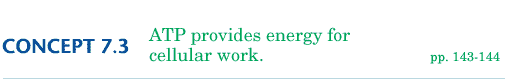

|
|
|
|
|
 Objectives
Key Term It's a good thing that food doesn't fuel your cells by burning like the torched peanut described in Concept 7.2. In fact, the carbohydrates, fats, and proteins obtained from food do not drive work in your cells in any direct way. The chemical energy stored in these compounds must first be converted to energy stored in another molecule. How ATP Packs Energy
Each phosphate group is negatively charged. Because like charges repel, the crowding of negative charge in the ATP tail contributes to the potential energy stored in ATP. You can compare this to storing energy by compressing a spring. The tightly coiled spring has potential energy. When the compressed spring relaxes, its potential energy is released. The spring's kinetic energy can be used to perform work such as pushing a block attached to one end of the spring. The phosphate bonds are symbolized by springs in Figure 7-9. When ATP is involved in a chemical reaction that breaks one or both of these phosphate bonds, potential energy is released. In most cases of cellular work, only one phosphate group is lost from ATP. Then the tail of the molecule has only two phosphate groups left. The resulting molecule is called adenosine diphosphate, or ADP. ATP and Cellular Work Your cells perform three main types of work: chemical work, mechanical work, and transport work (Figure 7-10). An example of chemical work is building large molecules such as proteins. ATP provides the energy for the dehydration synthesis reaction that links amino acids together. An example of mechanical work is the contraction of a muscle. In your muscle cells, ATP transfers phosphate groups to certain proteins. These proteins change shape, starting a chain of events which cause muscle cells to contract. An example of transport work is pumping solutes such as ions across a cellular membrane. Again, the transfer of a phosphate group from ATP causes the receiving membrane protein to change shape, enabling ions to pass through.
The ATP Cycle
The ATP cycle churns at an astonishing pace. A working muscle cell recycles all of its ATP molecules about once each minute. That's 10 million ATP molecules spent and regenerated per second! The next concept focuses on how your cells keep pace with this incredible demand for ATP.
Concept Check 7.3
|